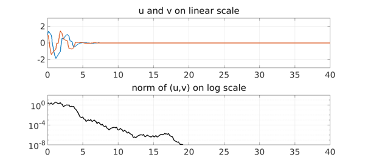

1. The simplest scalar example
Suppose you have a time-dependent ODE whose coefficients switch randomly between two different values. Interesting effects can arise. The most natural switching rule might involve a Poisson process, but another approach is to switch according to the sign of a function produced by the Chebfun randnfun command.
The simplest scalar example would be to switch randomly between $y' = y$ and $y' = -y$. Here is an illustration, showing the large swings of amplitude familiar in stochastic analysis in the related problem known as geometric Brownian motion. On a log scale, this process has no bias upward or downward. On a linear scale it's a bit subtler -- again there is no bias in the sense that for large values of $t$, $y(t)$ is as likely to be $<1$ as $>1$. The expected values of $y(t)$ or of $y(t)^2$, however, diverge to $\infty$ as $t\to\infty$.
rng(0), dom = [0 40]; LW = 'linewidth'; tic L = chebop(dom); L.lbc = 1; c = sign(randnfun(1,dom)); L.op = @(t,y) diff(y) - c*y; y = L\0; plot(y,LW,4), grid on
2. A matrix example of Lawley, Mattingly, and Reed
More remarkable behavior appears when we move from scalars to matrices. Suppose $y(t)$ is a 2-vector for each $t$ and it evolves with random switching between $y'= Ay$ and $y' = By$, with
A = [-1 5; 0 -1], B = [-1 0; -5 -1]
A =
-1 5
0 -1
B =
-1 0
-5 -1
Note that both matrices have eigenvalues $-1$, in the left half-plane. This means that each matrix individually is stable, and if the random switching is slow, the process will be dominated by the matrices' individual behaviors, and solutions will decay. Here for example is a run with the switching parameter set to the large value $\lambda = 3$, shown on both linear and log scales.
L = chebop(dom); L.lbc = @(u,v) [u-1; v-1];
L.maxnorm = 200*[1; 1];
lambda = 3;
f = 5*(1+sign(randnfun(lambda,dom)))/2;
L.op = @(t,u,v) [diff(u) + u - f*v; diff(v) + v + (5-f)*u];
[u,v] = L\0;
subplot(2,1,1), plot(u,LW,4), hold on, plot(v,LW,4), hold off, grid on
title('u and v on linear scale'), ylim([-3 3])
subplot(2,1,2), semilogy(u^2+v^2,'k',LW,4), grid on, ylim([1e-8 1e8])
title('norm of (u,v) on log scale'), ylim([1e-5 1e2])
set(gca,'ytick',10.^[-4:2:4])
With faster switching, however, there can be net amplification over time, as we see here with an experiment with $\lambda = 1$.
lambda = 1;
f = 5*(1+sign(randnfun(lambda,dom)))/2;
L.op = @(t,u,v) [diff(u) + u - f*v; diff(v) + v + (5-f)*u];
[u,v] = L\0;
subplot(2,1,1), plot(u,LW,3), hold on, plot(v,LW,3), hold off, grid on
title('u and v on linear scale'), ylim([-300 300])
subplot(2,1,2), semilogy(u^2+v^2,'k',LW,3), grid on, ylim([1e-8 1e8])
title('norm of (u,v) on log scale'), ylim([1e-1 1e6])
set(gca,'ytick',10.^[-4:2:4])
With still faster switching, solutions may decay once more. In this limit it is the average of the two matrices $A$ and $B$ that matters, which is stable. Here we show the effect with $\lambda = 1/3$.
lambda = 1/3;
f = 5*(1+sign(randnfun(lambda,dom)))/2;
L.op = @(t,u,v) [diff(u) + u - f*v; diff(v) + v + (5-f)*u];
[u,v] = L\0;
subplot(2,1,1), plot(u,LW,2.5), hold on, plot(v,LW,2.5), hold off, grid on
title('u and v on linear scale'), ylim([-3 3])
subplot(2,1,2), semilogy(u^2+v^2,'k',LW,2.5), grid on, ylim([1e-8 1e8])
title('norm of (u,v) on log scale'), ylim([1e-8 1e2])
set(gca,'ytick',10.^[-8:4:4])

For mathematical details of this fascinating effect see [1].
total_time_in_seconds = toc
total_time_in_seconds = 18.928349999999998
3. Reference
[1] S. D. Lawley, J. C. Mattingly, and M. C. Reed, Sensitivity to switching rates in stochastically switched PDEs, Commun. Math. Sci., 12 (2014), 1343-1352.